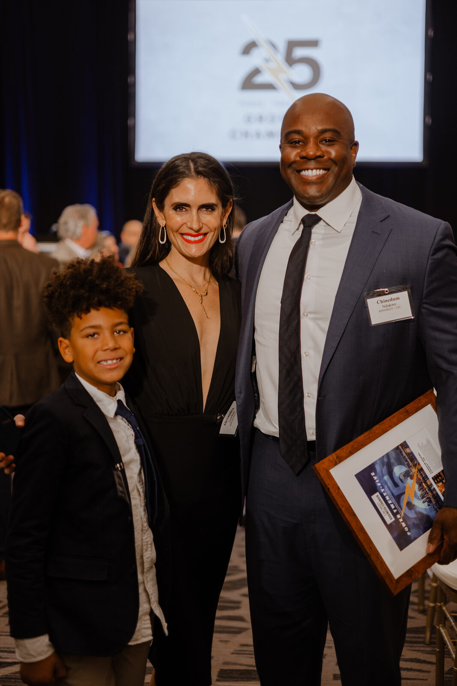

The Cincinnati Business Courier has named Kingsley + Co. a Power 25 Growth Champion, recognizing Chinedum Ndukwe's firm among the region's fastest-growing minority-owned businesses.
The Power 25 recognition highlights companies posting standout growth across the Cincinnati business community. For Kingsley + Co., a commercial real estate investment and development firm, the honor reflects several years of expanding project activity across the city — from acquisitions and redevelopment to ground-up construction.
Growth With a Purpose
Ndukwe accepted the award at a Business Courier event alongside members of his family, crediting the firm's growth to the partnerships it has built with lenders, contractors, and community stakeholders across Cincinnati. He was quick to point out that growth, for Kingsley + Co., is measured in more than deal volume.
"Every project we take on has to do two things — perform for our partners and make the neighborhood better," Ndukwe said. "Growth that doesn't do both isn't the kind of growth we're chasing."
A Track Record Behind the Award
The recognition follows a stretch of visible project activity for the firm, including its senior housing development in Walnut Hills and a student housing project near the University of Cincinnati. Both projects reflect the full-spectrum approach described on the firm's about page — acquisition, financing, design & build, and long-term asset management under one roof.
Local coverage of the award and the firm's broader work is available through the Cincinnati Business Courier's Power 25 Growth Champions feature.
Looking Ahead
Kingsley + Co. says the recognition won't change its underlying strategy: identifying overlooked sites and neighborhoods, assembling the right partners, and executing projects through stabilization and beyond. The firm continues to post updates on new and ongoing work on its LinkedIn company page.
Conclusion
The Power 25 award is an external marker of momentum Kingsley + Co. has been building project by project, neighborhood by neighborhood, since Chinedum Ndukwe founded the firm.